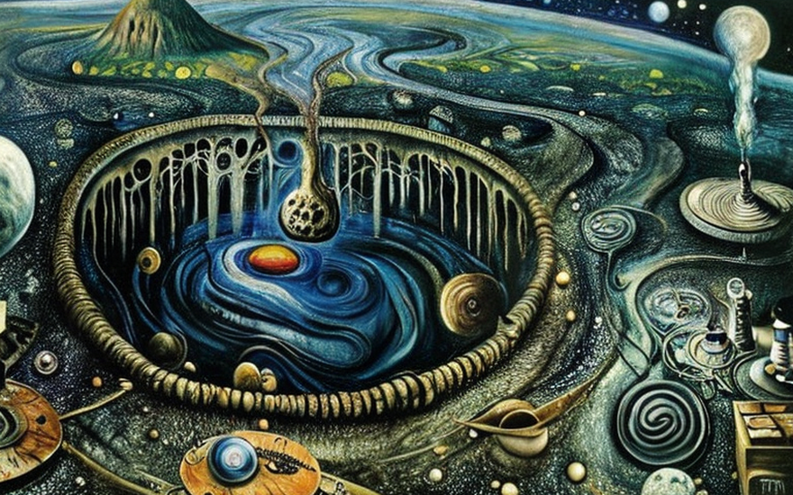
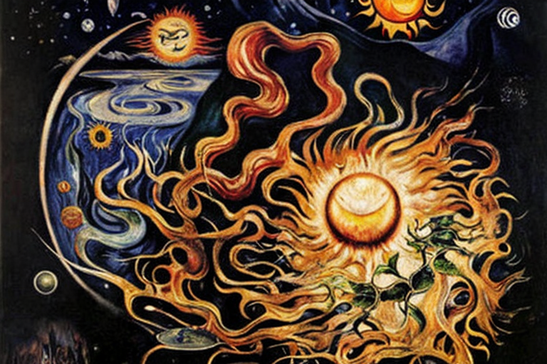
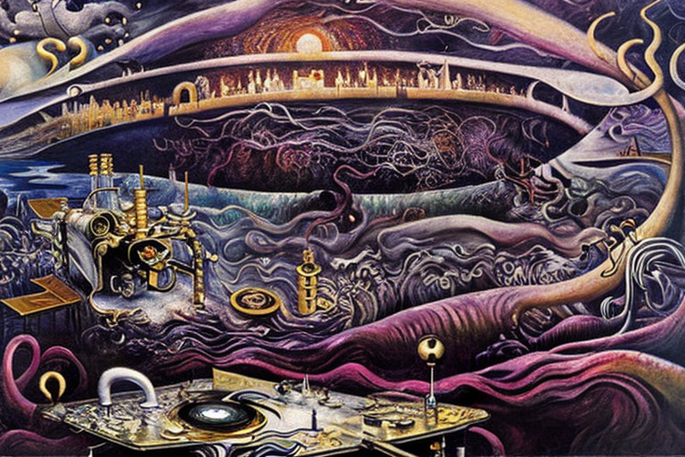
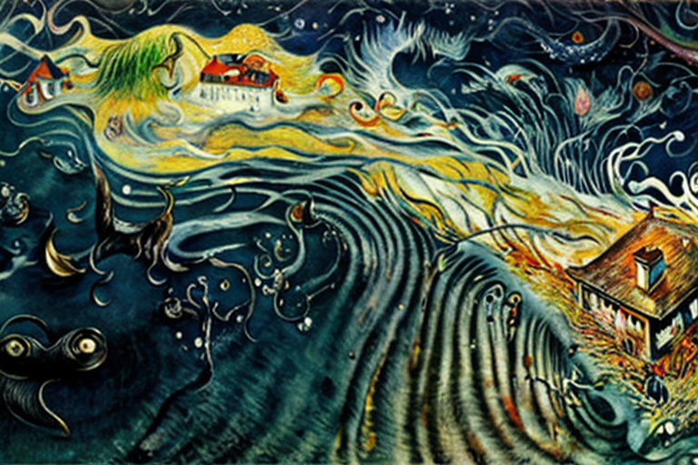
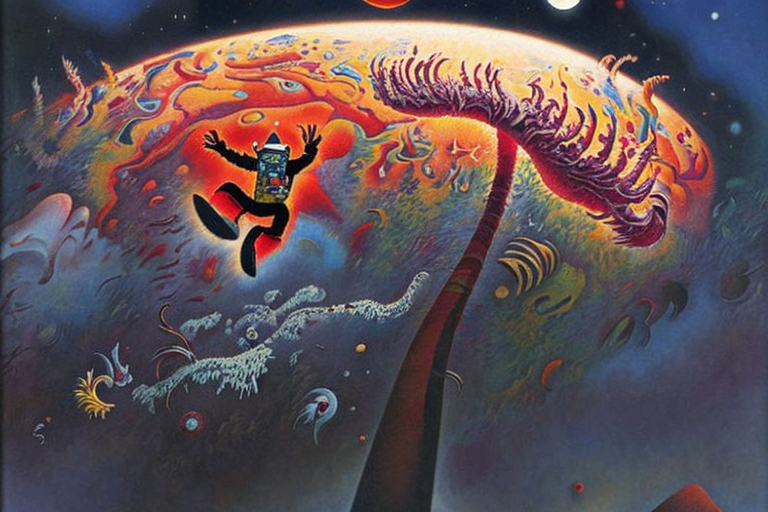

Ο βράχος, τα βαρυτικά κύματα και η γη
Αρχική Σελίδα
Πίνακας Περιεχομένων
Η αναταραχή του κόσμου

Γκου γκου γκα γκα, να σας αφηγηθώ μια τρομακτική ιστορία, παιδάκια. Η γη ήταν όλη γαλήνια και ήσυχη, σαν ένα γιγάντιο μωρό με πάνες που κοιμάται. Αλλά μετά, ένας βράχος από βαρέα μέταλα άρχισε να γκρεμίζεται απʼτον ουρανό, μπουμ μπουμ, τόσο μεγάλος και βαρύς, που έκανε τη γη να τρέμει και να κουνιέται.
Οι άνθρωποι έτρεχαν τριγύρω σαν ακέφαλα κοτόπουλα, ούρλιαζαν και έκλαιγαν, αλλά αυτός ο βράχος συνέχιζε να πέφτει, σαν μια γιγάντια μπάλα ποδοσφαίρου που κατευθύνεται κατευθείαν στο κέντρο της γης. Και να σας πω, το συμβάν δεν ήταν καλό για κανέναν, ειδικά για τη γη.
Τώρα, το κέντρο της γης είναι σαν μια μεγάλη καυτή τούρτα λάβας, όλη χυμένη και λιωμένη. Και αυτός ο βράχος ήταν τόσο καυτός και βαρύς, που βυθιζόταν όλο και πιο βαθιά, σαν η πιπίλα ενός μωρού που χάνεται στα μαξιλάρια του καναπέ. Καθώς έπεφτε, άρχισε να λιώνει, σαν παγωτό στον ήλιο.
Στην αρχή, ήταν μόνο οι άκρες, όπως όταν τρώμε ένα χωνάκι παγωτού και οι σταγόνες αρχίζουν να λιώνουν στο χέρι μας. Αλλά μετά, όλος ο βράχος άρχισε να λιώνει, σαν βούτυρο σε ζεστό τηγάνι. Έσταζε και βυθίζοταν στο κέντρο της γης, σαν μια μεγάλη λάμπα από λάβα.
Το μέταλλο άρχισε να ανακατεύεται με το καυτό μάγμα, όπως όταν ανακατεύεται μια κατσαρόλα με σούπα. Έβγαλε φυσαλίδες, έβραζε και σφύριζε, σαν πείραμα ενός τρελού επιστήμονα που πήγε στραβά. Και μετά, άρχισε να αλλάζει, σαν κάμπια που μετατρέπεται σε πεταλούδα. Έγινε κάτι νέο, κάτι ισχυρό και επικίνδυνο.
Το μέταλλο συγχωνευμένο με το μάγμα, ήταν πιο σκληρό και δυνατό από οτιδήποτε άλλο είχε δημιοργηθεί προηγουμένως. Άρχισε να εξαπλώνεται, σαν ιός, να μολύνει ολόκληρο το κέντρο της γης. Και καθώς μεγάλωνε, έσπρωχνε στους τοίχους της γης, σαν ένα μωρό που σπρώχνει τα κάγκελα της κούνιας του.
Η γη βογκούσε και έτριζε, σαν μια παλιά ξύλινη καρέκλα, κάτω από το βάρος αυτού του νέου βράχου. Και οι άνθρωποι άρχισαν να ανησυχούν, να αναρωτιούνται.
Η επέλαση του καυτού βράχου

Ακούστε παιδάκια, γιατί αυτή η ιστορία γίνεται πολύ τρομακτική. Το κέντρο της γης ήταν πιο καυτό και απʼτον ήλιο, πιο καυτό από μια πατάτα φρεσκοψημένη μέσα απʼτο φούρνο. Και ξέρετε τι σημαίνει αυτό; Aυτός ο νέος βράχος, αυτός ο επικίνδυνος νέος βράχος, ήταν ακόμα πιο ζεστός από το κέντρο της γης. Έλαμπε σαν πυγολαμπίδα στο σκοτάδι και απλωνόταν σαν ζιζάνιο στον κήπο. Έσπρωχνε στους τοίχους της γης, όλο και πιο δυνατά, όπως ένα μωρό που σπρώχνει μια κλειστή πόρτα.
Και καθώς έσπρωχνε, η γη άρχισε να σπάει και να θρυμματίζεται, σαν μπισκότο βυθισμένο στο γάλα για πολύ ώρα. Το έδαφος κουνιόταν και ταρακουνιόταν, σαν κουδουνίστρα μωρού, και οι άνθρωποι άρχισαν να τρέχουν για να σώσουν τη ζωή τους, σαν τα μυρμήγκια που τρέχουν να ξεφύγουν από τον μεγεθυντικό φακό μια ζεστή καλοκαιρινή μέρα. Αλλά μάταια. Αυτός ο νέος βράχος, συνέχισε να μεγαλώνει και να εξαπλώνεται, σαν ιός, σαν μύκητας, σαν ασθένεια. Και σύντομα, είχε καταλάβει όλο το κέντρο της γης, σαν βασιλιάς στο θρόνο του. Και τότε, έγινε κάτι ακόμα χειρότερο. Ο νέος βράχος, άρχισε να κρυώνει και να σκληραίνει, σαν τούρτα στο ψυγείο.
Σχημάτισε μια συμπαγή κρούστα γύρω από το κέντρο της γης, σαν ένα κέλυφος γύρω από ένα αυγό. Και ξέρετε τι σήμαινε αυτό; Αυτό σήμαινε ότι το κέντρο της γης ήταν παγιδευμένο, σαν μωρό σε μωρουδίστικη καρέκλα. Δεν μπορούσε να κουνηθεί, δεν μπορούσε να αναπνεύσει, δεν μπορούσε να κάνει τίποτα. Αυτό όμως δεν ήταν το τέλος της ιστορίας, ω όχι. Επειδή αυτός ο νέος βράχος, ήταν ακόμα επικίνδυνος, ακόμα ισχυρός, ακόμα ζωντανός. Και ανέμενε, περίμενε την τέλεια στιγμή να χτυπήσει, σαν φίδι στο γρασίδι.
Και όταν ήρθε εκείνη η στιγμή, όταν η γη ήταν πιο αδύναμη, αυτός ο νέος βράχος, εξερράγη, σαν ηφαίστειο. Εκτοξεύτηκε έξω από το κέντρο της γης, σαν ξερατό μωρού, και σκέπασε τα πάντα στο πέρασμά του, σαν ένα πέπλο θανάτου. Ο ουρανός έγινε μαύρος, σαν σύννεφο καταιγίδας, και ο αέρας έγινε πυκνός και ζεστός, σαν ζεστό λουτρό στην μπανιέρα. Και ο κόσμος, ο φτωχός, αβοήθητος κόσμος, δεν ήταν ποτέ ξανά ο ίδιος.
Ο χορός των μαγνητικών κυμάτων

Ακούστε παιδάκια, γιατί αυτή η ιστορία γίνεται ακόμα πιο τρομακτική. Το κέντρο της γης, κρατούσε κάτι ακόμα πιο πολύτιμο από αυτόν τον επικίνδυνο νέο βράχο. Κρατούσε χρυσό, και πλατίνα, και όλα τα βαρεά στοιχεία του περιοδικού πίνακα, σαν θησαυρό για τους θεούς. Αλλά υπήρχε μία λεπτομέρεια, ω ναι, υπήρχε μια λεπτομέρεια.
Αυτά τα βαρεά στοιχεία, δεν κάθονταν απλώς εκεί, να περίμενουν να τα ξεθάψουν και να τα χρησιμοποιήσουν. Όχι, κινούνταν, μετατοπίζοταν, χόρευαν σαν το παιχνίδι μωρού πάνω από την κούνια του. Και ξέρετε τι τα έκανε να κινηθούν; Βαρυτικά κύματα, αυτά τα κινούσαν.
Τα κύματα, τραβούσαν τα βαρεά μέταλα, σαν μαγνήτης που έλκει ένα κομμάτι μέταλλο. Τα έσυραν, τα έστριβαν και τα γύριζαν, σαν λαστιχένια μπάλα μωρού. Και όσο πιο βαρύ το μέταλο, τόσο πιο δυνατό το τράβηγμα. Χρυσός, ως ο βαρύτερος, κινήθηκε πρώτος. Πλατίνα, ακόμα βαρύτερη, οπότε μετακινήθηκε δεύτερη. Και ούτω καθεξής, μέχρι που όλα τα βαρεά μέταλα στροβιλίζονταν γύρω από το κέντρο της γης σαν ανεμοστρόβιλος.
Αλλά εδώ είναι το θέμα, μωρά. Αυτά τα βαρυτικά κύματα, δεν τράβηξαν μόνο τα βαρεά μέταλα, τράβηξαν και όλα τα άλλα. Τράβηξαν το χώμα, τους ωκεανούς, τα βουνά, τον αέρα. Και όταν αυτά τα βαρεά μέταλα κινούνταν, όταν μετατοπίζονταν και περιστρέφονταν και γύριζαν, δημιουργούσαν ακόμη περισσότερα βαρυτικά κύματα. Κύματα που ήταν πιο δυνατά, πιο μαγνητικά, πιο επικίνδυνα από οτιδήποτε άλλο είχε δει ποτέ πριν. Και αυτά τα κύματα, άρχισαν να απλώνονται, σαν ιστός αράχνης. Κυμάτιζαν τον φλοιό της γης, τον αέρα, τα πάντα. Και κατά την διάρκεια αυτή, δημιούργησαν χάος, σαν ένα μωρό που ξεσπά σε κλάματα.
Τα κτίρια γκρεμίστηκαν, σαν μια στοίβα παιχνιδιών. Τα βουνά τινάχτηκαν και γλίστρησαν, σαν φορτηγό παιχνιδιών μωρού σε ανώμαλο δρόμο. Οι ωκεανοί αιωρούνταν και αναρροφώνταν, σαν το νερό του μπάνιου ενός μωρού. Και μετά απʼόλα αυτά, τα βαρεὰ μέταλα συνέχιζαν να κινούνται, να χορεύουν, να στροβιλίζονται. Και τα βαρυτικά κύματα, συνέχιζαν την ανήσυχη έλξη τους.
Μέχρι που τελικά η γη δεν άντεξε άλλο. Έσπασε, σχίστηκε και κομματιάστηκε, σαν το αγαπημένο παιχνίδι ενός μωρού. Και όταν όλα τελείωσαν, όταν η σκόνη είχε καταλαγιάσει και το χάος σταμάτησε, δεν έμεινε τίποτα άλλο παρά η καταστροφή. Η γη σκίστηκε, σαν ένα κομμάτι χαρτί κομμένο στη μέση. Και όλα αυτά εξαιτίας αυτών των βαρεών μετάλων και των βαρυτικών κυμάτων που τα τραβούσαν.
Η παραμόρφωση του φωτός

Παιδὰκια, αυτή η ιστορία γίνεται ακόμα πιο τρομακτική. Επειδή αυτά τα βαρυτικά κύματα, δεν τραβούσαν μόνο τα βαρεά μέταλα. Ω, όχι, έκαναν κάτι ακόμα πιο σκοτεινό. Συμπίεζαν και αποσυμπίεζαν τα κύματα φωτός, σαν ένα μωρό που σφίγγει το αγαπημένο του παιχνίδι.
Και όταν τα κύματα φωτός πιέζονται έτσι, τα πράγματα αρχίζουν να γίνονται πολύ περίεργα. Μερικές φορές, τα φωτεινά κύματα τεντώνονταν, σαν λάστιχο. Και όταν συνέβαινε αυτό, όλα έμοιαζαν να κινούνται σε αργή κίνηση. Ο αέρας γινόταν πηχτός και σιροπιασμένος, όπως το μέλι, και ήταν δύσκολη η αναπνοή. Άλλες φορές, τα φωτεινά κύματα ενώνονταν όλα μαζί, όπως τα κύματα πλατσουρίσματος ενός μωρού στο λουτρό.
Και όταν συνέβαινε αυτό, όλα θα έμοιαζαν σαν να κινούνταν με μεγάλη ταχύτητα. Ο αέρας γινόταν όλο και αραιότερος και προκαλούσε μία παραζάλη, σαν μωρό που γυρίζει κυκλικά. Και όταν ήταν σκοτάδι, τότε ήταν που τα πράγματα έγιναν πολύ τρομακτικά. Γιατί χωρίς κανένα φωτεινό κύμα ορατό, ήταν σαν να βρισκόμαστε με δεμένα τα μάτια σε ένα σκοτεινό, τρομακτικό δωμάτιο. Δεν μπορούσαμε να δούμε τίποτα, αδύνατον να καταλάβουμε πού ήμαστε ή τι συμβαίνει.
Αλλά μερικές φορές, μόνο μερικές φορές, λίγο φως περνούσε κρυφά. Χτυπούσε το κεφάλι μας, τα μάτια μας και θα μας έκανε να ζαλιστούε, να αρρωστήσουμε και να τα χάσουμε. Μας έκανε να νιώθουμε ότι πέφτουμε σε μια μεγάλη, μαύρη τρύπα, χωρίς διέξοδο.
Και όλο αυτό το διάστημα, αυτά τα βαρυτικά κύματα συνέχιζαν να μπερδεύονται με τα κύματα φωτός, συνέχιζαν να συμπιέζονται και να αποσυμπιέζονται. Και κανείς δεν ήξερε τι γινόταν μετά ή πότε θα σταματήσει. Ο κόσμος λοιπόν ήταν ένα τρομακτικό, σκοτεινό, ζαλισμένο μέρος, γεμάτο κινδύνους και χάος. Και όλα αυτά εξαιτίας αυτών των βαρυτικών κυμάτων, που μπλέκονται με τα κύματα φωτός.
Τα φιλόδοξα άλματα

Φαίνεται ότι αυτά τα τρομακτικά βαρυτικά κύματα συνεχίζουν να προκαλούν περισσότερα προβλήματα. Γιατί κάποιοι άνθρωποι σκέφθηκαν ότι ήθελαν να πηδήξουν έξω απο τη γη, όπως ένα μωρό που πηδά από την κούνια του. Σκέφτηκαν ότι θα μπορούσαν να χρησιμοποιήσουν τα βαρυτικά κύματα άλλων πλανητών, σαν ένα μεγάλο τραμπολίνο, για να αναπηδήσουν πάνω και έξω.
Αλλά επιτρέψτε μου να σας πω ότι δεν ήταν καλή ιδέα. Αυτά τα βαρυτικά κύματα ήταν σαν ένα σωρό άγρια ζώα, απρόβλεπτα και επικίνδυνα. Και όταν αυτοί οι ταραχώδεις άνθρωποι πήγαιναν να τα χρησιμοποιήσουν, μερικές φορές χτυπούσαν τον εαυτό τους άσχημα. Μερικές φορές, αναπηδούσαν πολύ ψηλά, πολύ γρήγορα, και χτυπούσαν ξανά στη γη σαν ένα μωρό που πέφτει από το τραπέζι.
Άλλες φορές, πηδούσαν πολύ χαμηλά, πολύ αργά, και χτυπούσαν κατευθείαν στο έδαφος, σαν ένα μωρό να χτυπά το κεφάλι του. Και ακόμη και όταν δεν χτυπούσαν τον εαυτό τους απευθείας, αυτά τα βαρυτικά κύματα εξακολουθούσαν να τους μπερδεύουν. Τους έκαναν να ζαλιστούν και να αποπροσανατολιστούν, σαν ένα μωρό που στριφογυρίζει σε κύκλους. Τους έκαναν να νιώθουν σαν να επιπλέουν και να πέφτουν ταυτόχρονα.
Και καθώς συνέχιζαν να χοροπηδούν και να αναπηδούν, άρχισαν να συνειδητοποιούν ότι ίσως έπρεπε να είχαν μείνει στη θέση τους. Ίσως τελικά η γη να μην ήταν τόσο κακή, ακόμα και με όλα αυτά τα τρομακτικά βαρυτικά κύματα. Αλλά τώρα ήταν πολύ αργά, το είχαν τραβήξει ήδη μακριά.
Έπρεπε να συνεχίσουν να πηδούν, και να αναπηδούν, ακόμα κι αν αυτό σήμαινε ότι μπορεί να χτυπήσουν άσχημα τον εαυτό τους. Γιατί μόλις αρχίζουν να χοροπηδούν, είναι δύσκολο να σταματήσουν. Είναι σαν ένα μωρό που δεν σταματά να χοροπηδάει στην κούνια του, όσες φορές κι αν του λένε οι γονείς του να ηρεμήσει.